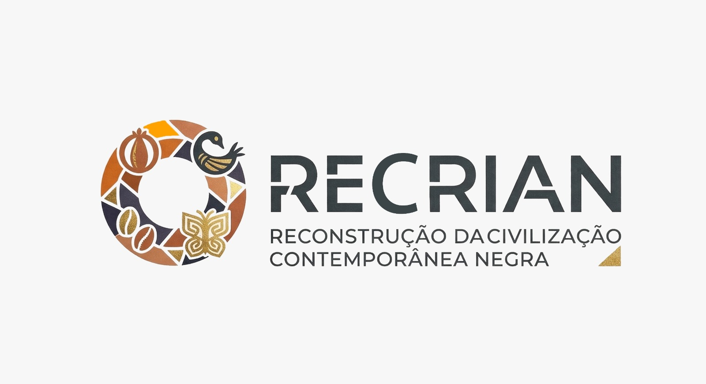
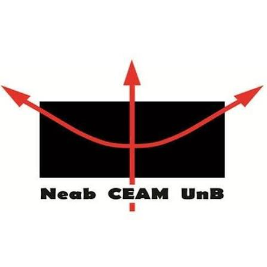
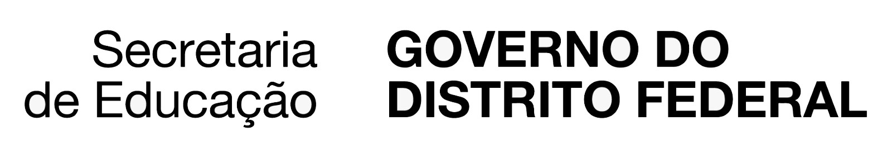

⚠️ 100% Remoto para regiões fora do DF. Atividades híbridas para regiões do DF.
560 no total
140 para Gestores
420 para Professores
05 de outubro de 2026
a
18 de fevereiro de 2026
09 de novembro
Abertura das turmas
180 horas
Formação Online
Certificado pela UnB
A Universidade de Brasília e o Ministério da Educação convidam professores(as), gestores(as) e demais profissionais da educação básica a participarem desta formação continuada online de 180 horas, no âmbito da RENAFOR/SECADI, voltada à implementação da Política Nacional de Educação para as Relações Étnico-Raciais e Educação Escolar Quilombola – PNEERQ.
A Lei nº 10.639/2003 tornou obrigatório o ensino de História e Cultura Africana e Afro-Brasileira. A PNEERQ, instituída pelo MEC em 2024, amplia e fortalece essa agenda, promovendo formação de profissionais, diagnóstico, monitoramento, produção de materiais, prevenção e enfrentamento do racismo e valorização das trajetórias negras e quilombolas.
Mais do que cumprir horas de formação, este curso representa uma oportunidade de qualificação profissional, fortalecimento da escola e reconhecimento do trabalho que já é realizado diariamente pelos profissionais da educação, sendo direcionado a todos os profissionais de educação do Brasil! A formação possibilita também a adesão a programas de equidade, PDDE, VAAR e ao Prêmio Petronilha.
Fundamentos e Marco Legal; Marcos Regulatórios no DF; Educação Ambiental Antirracista; Saberes tradicionais; Desigualdade racial e educacional no DF.
Planejamento e Gestão Escolar Antirracistas; PDDE e VAAR Equidade; Monitoramento e Avaliação; Matriz Nacional de Competências; Protocolos Nacionais e da SEDF de Prevenção ao Racismo; Selo Lélia Gonzales.
Currículo Antirracista; Letramento racial; Literatura Afro-Brasileira e da Diáspora; Saúde Mental, Racismo e Educação; Orientação educacional antirracista; Vínculo com a comunidade.
PIP – Gestão Escolar e PIP – Práticas Pedagógicas.